危险像素
127 / 128 / 129（即 xv = −1, 0, +1）减幅会撞零，标记为湿点。
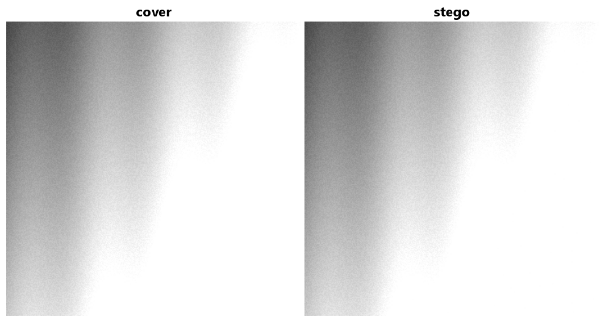
实验 1 · 一分钟上手
拖动位平面滑条观察图像被拆成 8 层；输入消息后，我们只修改最低位并统计被改变的像素。
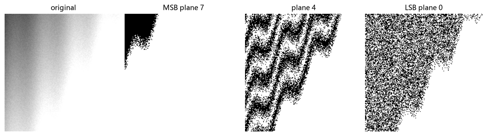
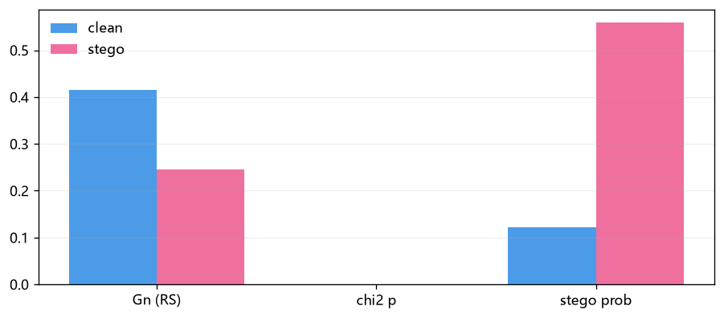
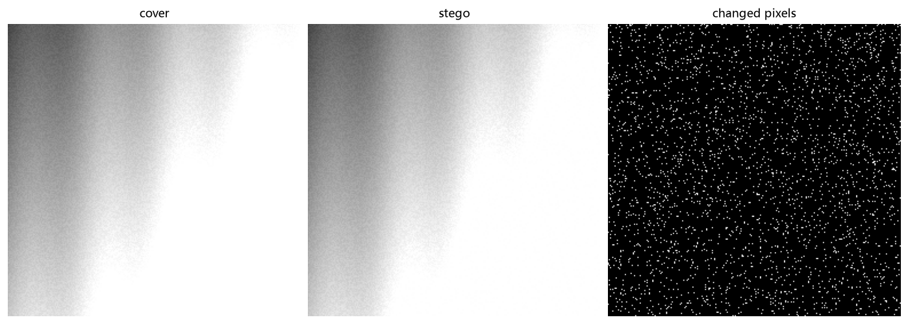
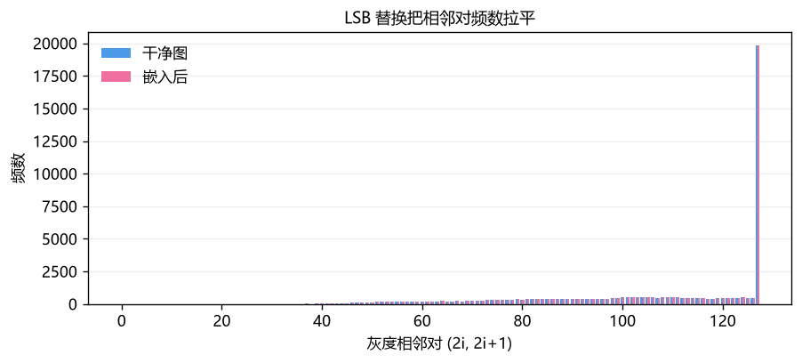
实验 2 · 项目的核心
点击格子手动翻转 LSB，或让系统自动找出“该翻转哪一个位置”，实时验证 H·x == m。
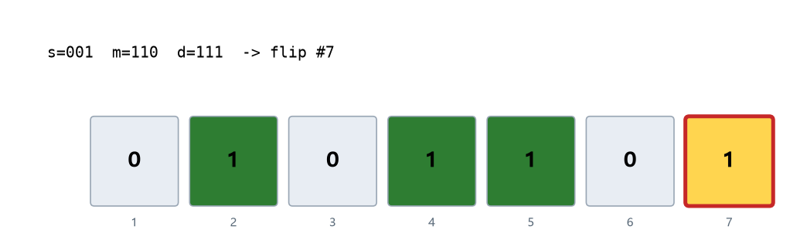
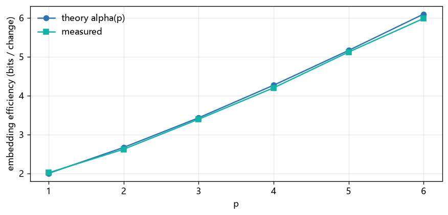
更深入一步
像素减 128 后，|xv|≤1 的像素像“被水浸湿的纸”。nsF5 不碰它们，只在干点上解 GF(2) 方程——无收缩、无重试。
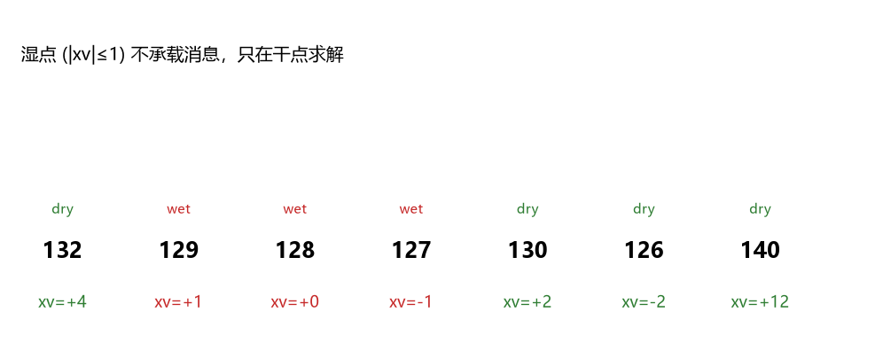
提示：点击格子可在“湿/干”之间切换，观察干点不足时会发生什么。
127 / 128 / 129（即 xv = −1, 0, +1）减幅会撞零，标记为湿点。
只在干列上求伴随式方程 H·y = d，优先单列、双列，再高斯消元兜底。
每个块都能一次成功，容量与嵌入效率逼近汉明码理论上限。
一张图看懂
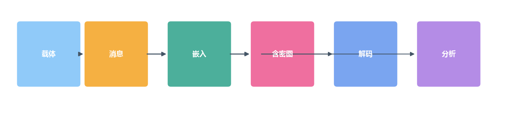
消息 → 长度头 + SHA-256 键控 → 汉明/湿纸编码 → 写入 LSB → 含密图。
重算内容哈希 → 恢复路径 → 提取伴随式 → 还原消息；被篡改会自同步失败。
卡方 / RS / 11-143 维特征 + 双版本 LGB 模型输出含密概率。
机器学习检测
先手工设计能度量 LSB 足迹的特征，再用分类器学一个判别边界；项目同时保留“稳健 143 维”与“可解释 53 维”两套模型。
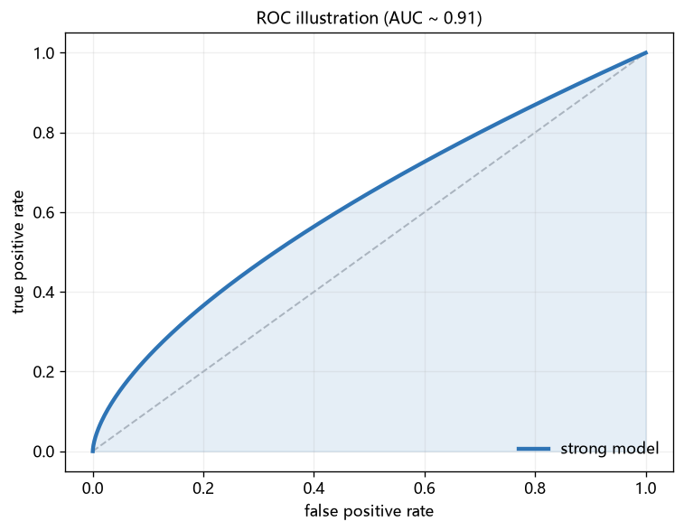
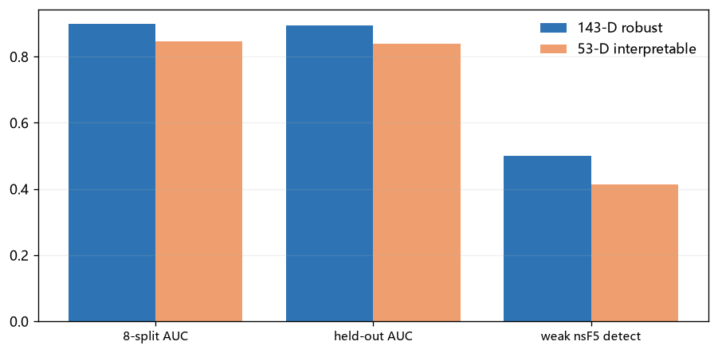
红线向右 = 更严格（误报少、漏报多）；向左 = 更宽松（检出高、误报多）。
弱 LSB 信号 + 独立样本只有照片数；特征法在同样小数据上更稳、更可解释。
同一张照片的所有变体只能同进同出，防止“同源泄漏”让 AUC 虚高。
143d 更稳（OOD 1/8 误报），53d AUC 更高且每个特征都能解释。
12 周学习路线
继续深入